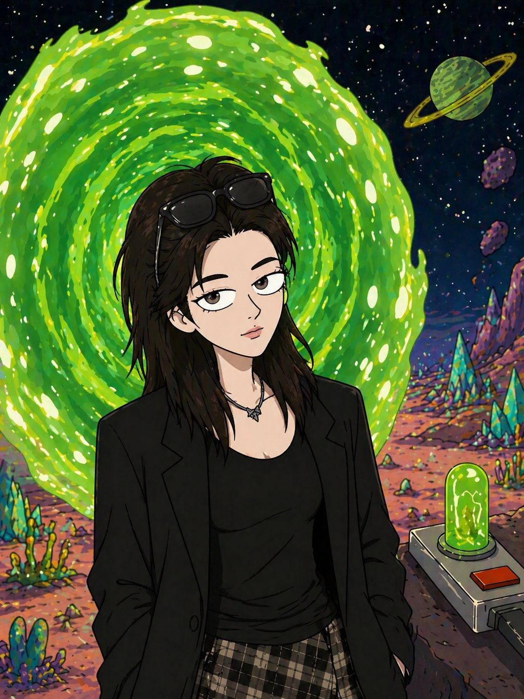

Growth operator across Web3, Fintech & SocialFi — turning user insight into scalable systems
Currently building AI-assisted internal tools with Claude Code & Codex

"that's me, mid-portal" ✦
I'm a user growth operator with cross-functional experience across Web3 / Fintech / SocialFi — from scaling a Layer-1 community to 50k+, to driving trading conversion on a fintech platform, to onboarding 800+ creators for an early-stage SocialFi ecosystem.
I believe user insight isn't a number on a survey. It comes from Discord, Telegram, campaign retros and watching real human behavior — then gets structured into repeatable growth systems, not one-off viral moments.
Lately I've been using Claude Code & Codex to build small internal tools for my own workflows and automate repetitive execution work. // 1 person + AI = 1 team.
Growth isn't a campaign.
It's a system
built on listening.
— what I actually believe
★ FEATURED CASE
Designed a cross-category incentive mechanism for activated-but-non-trading stock users, aiming to convert them from Stock to Crypto. Validated through a two-phase rollout (Pilot → Scale), the experiment identified an incremental acquisition cost of ~$64 per user — producing data insights for future growth optimization.
// CASE 02
Promoted Futu's newly launched Crypto standalone page and Crypto Desktop through user segmentation, in-app placements, task incentives and community engagement — reaching 90%+ target-user coverage and lifting feature-driven trading conversion by +25%+.
// CASE 03
For MEXC, designed a multi-tier rebate program for dormant high-net-worth users using behavioral triggers and automated reward release. Optimized distribution logic and budget pacing through usage tracking and feedback loops — achieved ROI ≈ 6 with significant trading-activity recovery.
// CASE 04
Built Tako Protocol's early-stage content ecosystem from scratch through customized outreach scripts, tiered creator maintenance and data-driven retros — onboarding 800+ creators in five months and laying down the platform's early influence base.
Looking for roles in
Growth · BD · AI GTM
where user insight, product value & scalable execution meet.
Side-projects built with Claude Code & Cursor. Not products — just small tools that scratch my own itches and (sometimes) ship to a URL. More incoming. ✦
An AI literary rewriter in the voice of André Gide. Drop in any text, pick a language, intensity and depth — out comes a re-imagined version. A small love-letter to literature.
— or just say hi from your dimension ✦
currently open to growth, BD & AI GTM roles · remote / global